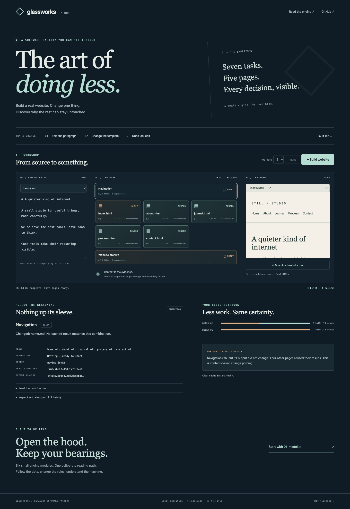

See the starting point
Build the sample website and watch seven tasks produce five pages.
INTERACTIVE DEMO SPRINT / MIKE HAMANAKA
I turn one complex product or workflow into an interactive browser demo. Change an input. See the consequence. Understand the idea.
For software founders and agencies preparing a product explanation, client presentation, or hands-on workshop.

A build engine becomes something you can see and change. Actual interface with fictional sample content.
THE EXAMPLE
Glassworks explains how a small build engine reuses work. Its interface makes a change, the affected tasks, and the result visible together.
Build the sample website and watch seven tasks produce five pages.
Change a paragraph. See which tasks rebuild and which results can be reused.
Inspect the dependencies and compare the build history. Undo the edit and see what happens.
Glassworks is my educational project for trusted tasks, with fictional sample content. It demonstrates the format; it is not a customer case study. Capture source and revision.
ONE FOCUSED ENGAGEMENT
We agree on one audience, one central interaction, and three scenarios before work begins. The fee and delivery date follow the brief.
The starting scope uses approved demonstration data. Live system integrations, accounts, payments, production operation, and ongoing support need a separate agreement.
WHERE THIS FITS
Let a prospective user explore a key idea before installing software or booking a full walkthrough.
Bring a tutorial, launch page, or client presentation to life with a small browser experience.
Let a participant change a rule or input and compare the agreed example outcomes.
For more examples of interaction and visual explanation, explore Loophole and Ship It. These are public experiments, not client testimonials.
START WITH THE EXPLANATION
Send me three things: who the demo is for, the product or idea you need to explain, and when you need it. A public link or a short description is enough to start.
“We need to explain [one workflow] to [audience] before [occasion or date]. After trying the demo, they should understand [result].”
Message me on LinkedIn and mention “demo sprint.” We will confirm fit, scope, fee, and availability before starting. Please keep confidential material out of an initial public message.